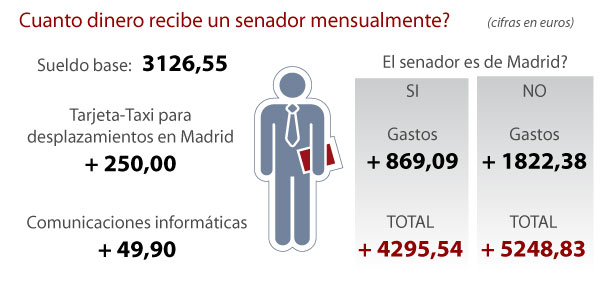

En realidad dichos senadores si han realizado una intervención, la de juramento, sin la cual no podrían ostentar el cargo de senador.
Abajo podemos ver un diagrama que ilustra el la cantidad de dinero recibida mensualmente por los senadores, ¿por qué hay senadores que no han hecho ninguna intervención?
